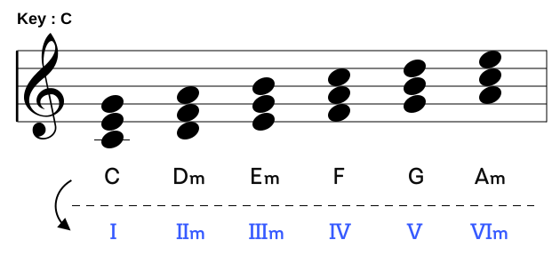
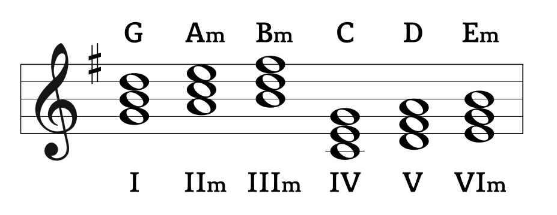
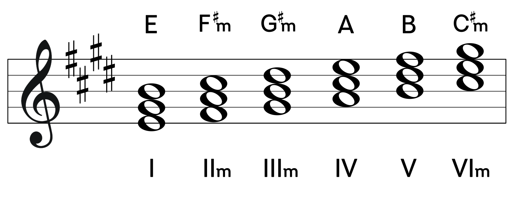
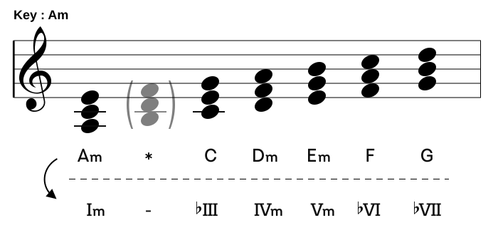
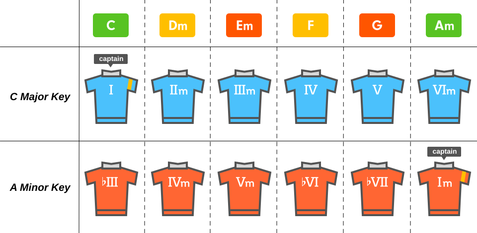
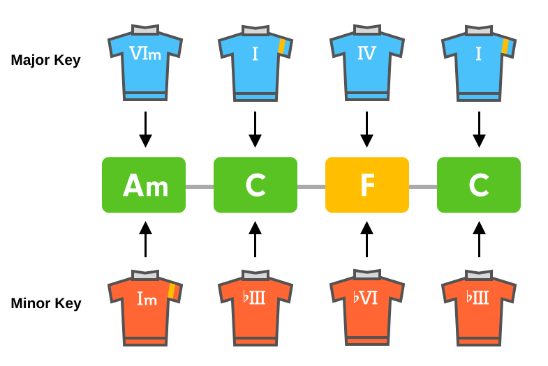
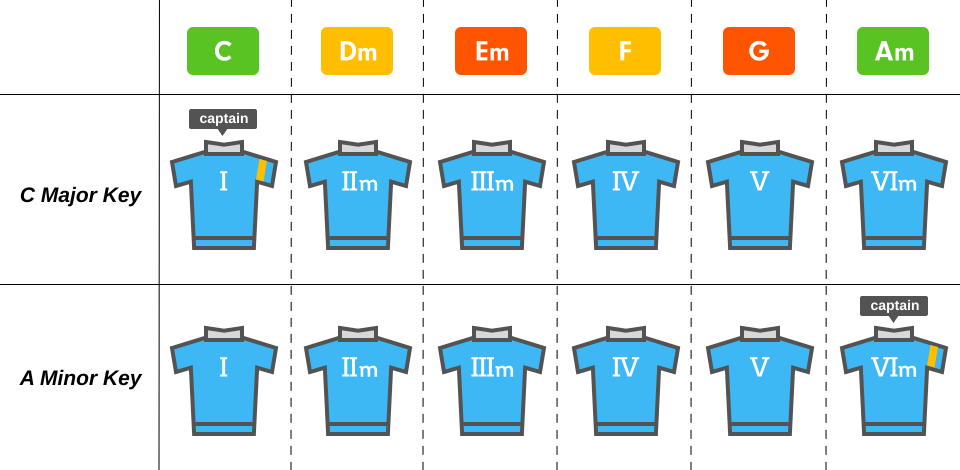
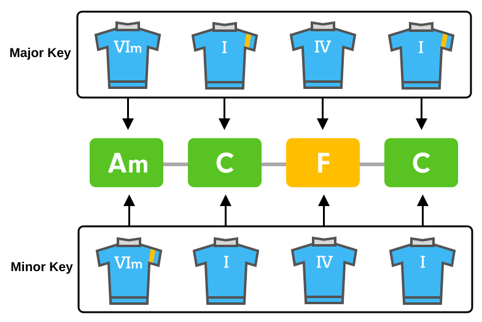

1. 音乐的相对性
1. 音乐的相对性
再次重申，构成流行音乐最核心基石的便是“六大基调和弦”。

A大调的基调和弦
正如之前所讲，这些和弦是“基于调式音阶按三度叠置（叠丸子）生成的和弦”，因此基调和弦的具体成员在每个调中都是不同的。吉他手之所以要死记硬背那么多和弦指法，说到底就是为了能够在各个不同调性中弹奏出相应的基调和弦。 例如，假设我们为某位歌手用 C 大调写了一首歌曲：
C Em Am F
但歌手试唱后觉得调子有点偏低，要求升两个（升大二度）。这时演奏者要弹奏的具体和弦自然就全变了：
D F♯m Bm G
升两个半音意味着将调性转为了 D 大调。使用的和弦全部脱胎换骨，换成了 D 大调的六大基调和弦。 那么此时请思考一个问题：升调前的歌曲与升调后的歌曲，这两首究竟算不算是“同一首”歌曲？
绝对与相对
——答案既是“Yes”，也可以是“No”。

当然是！只是转了个调而已，旋律走向和歌曲本身完全没变啊。虽然音高抬高了一点，但本质上就是同一首歌。

非也。弹奏的和弦全都换了一遍，五线谱上的音符位置完全变了，硬说是同一首歌未免太勉强了吧。
双方的说法都有其道理，这完全取决于你如何定义“相同”。也就是说，在审视音乐结构时存在着两种截然不同的视角——绝对视角与相对视角。 具体的和弦名称（如 C、Am、F）更偏向于从“绝对”的物理音高视角来记录音乐。从这个视角看，上面两首歌自然是“不同”的：

那么反过来，我们该如何从理论上严谨证明这两首曲子在本质上是“同一首”呢？为此，我们必须跳出绝对音高的局限，从“相对结构”的维度去分析音乐——然而目前我们手中还没有这种抽象化的工具。 就像“全全半全全全半”的音程排列定义了大调音阶、或者在KTV随意升降调大家绝不会认为变成了另一首歌一样，人类大脑在感知音乐时，依赖的从来不是绝对的物理频率，而是基于音与音之间的相对音程距离。由此看来，音乐理论真正应当剖析的，恰恰是这种相对结构。 例如“中心音”这一概念，本身就是相对于调性而言的词汇：在 D 大调中，D 是中心音；在 F♯ 小调中，F♯ 是中心音。

这种相对化成功揭示了音阶运作的底层机制。那么接下来，我们理应将和弦进行也进行彻底的相对化。这正是本篇的核心使命。
2. 用罗马数字记谱
话虽如此，如果好不容易有 ABCD 这样简洁好记的字母，抽象化后反而变得冗长晦涩，那就本末倒置了。于是，音乐界选中的利器正是——罗马数字。从第1个和弦开始按顺序，依次用罗马数字进行编号：

大功告成！以此命名的全新代号，被称为级数代号（Degree Name / 音级名称）。 上图是以 C 大调为例：最左边的和弦在绝对和弦代号中称为“C”，但在级数代号中则被称为“I”。除数字替换为罗马数字外，其余格式保持一致，因此小和弦依然保留“m”。
级数代号的读法
关于罗马数字的读法：英文通常念作“One”、“Two-minor”、“Five”；中文则普遍念作“一级”、“二级小（或直接念二小）”、“五级”；或者念作“一度、二度小、五度”等。
3. 即刻投入实战
从现在开始，我们将逐步减少对绝对和弦名的依赖，全面启用级数代号。但如果仅仅停留在上述概念难免过于抽象。接下来让我们看看在现实创作场景中，如何在绝对和弦名与级数代号之间自如转换。
抽象化为级数代号
听到一段特别喜欢的和弦进行。在网上一查，发现该曲是 G 大调，和弦是“Em - C - G - D”。 想把它牢牢记住并应用到其他任何调中，因此希望将其转换为级数代号。
此时，首先需要在脑海中浮现出 G 大调的六大基调和弦。具体推导通常有两种途径：通过键盘/五线谱逐步推导，或直接利用速查。我们先看第一种： G 大调带有1个升号（在五度圈上可迅速验证）。从 G（Sol）音开始排布大调音阶，然后按三度叠置构建出六大基调和弦，最后依次标上 I、IIm、IIIm、IV、V、VIm 的编号！
就是这样。 接着从 G 开始依次列出和弦名称：G 的旁边是 Am，Am 旁边是 Bm……

一目了然！对照可知，原曲的“Em - C - G - D”在级数代号中正是 VIm - IV - I - V。至此，抽象化大功告成！如果以后想在 C 大调中使用这套灵魂进行，只需反向具体化推导，即可得知对应的是“Am - F - C - G”。
借助五度圈进行光速转换
然而每次都在五线谱上数音符确实有些繁琐。此时，我们在准备篇学过的五度圈便成了终极提速外挂：

一秒锁定！显然比画五线谱要轻松得多。 观察级数在五度圈上的固定几何阵型：中心为 I，顺时针方向是 V，逆时针方向是 IV；内圈的小和弦从左至右依次为 IIm、VIm、IIIm：

像这样将具体的和弦进行抽象转换为级数代号的分析工序，被称为罗马数字分析法（Roman Numeral Analysis）[28]。
从级数代号具体化为和弦
“来一起即兴合奏一段吧！E 大调，和弦走 IV - V - I！”
面对乐手的这句呼唤，如果不还原为具体的和弦代号就无法在乐器上弹奏。此时立刻查看五度圈中 E 大调的基调和弦分布：

由此便能轻松还原：

非常明确：E 大调下的 IV - V - I，对应的正是 A - B - E 进行。 看来把五度圈打印出来贴在工作室墙上绝对是个英明的决定！🌝
球队成员与球衣背号
罗马数字分析法，本质上就像是给和弦穿上了印有固定背号的球队球衣。“大调”是一支战术体系严密明确的球队阵型，球衣背号从 I 到 VI 是固定死的。但在实战中究竟派哪个和弦穿上几号球衣，完全取决于当前的调性。而且每个和弦都同时效力于不同的球队：去了另一支球队，它就会换穿不同号码的球衣。请在脑海中建立起这样的生动意象：

绝对和弦名称是乐手演奏时必不可少的实操信息；而对于调性音乐的“和声分析与创作规律提炼”而言，相对结构才是核心灵魂。因此在后续的理论教程中，级数代号将占据绝对统治地位。 正因如此，强烈建议大家尽早将最经典的 C 大调基调和弦与罗马数字的对应关系熟记于心。日后当看到 IIm - V 时，脑海中要能秒反应出 Dm - G。至于其他各调，在以后的实际创作中用到哪个调再循序渐进地积累即可。 罗马数字在日常生活中除了看高档复古手表表盘、或者读《最终幻想》《勇者斗恶龙》的正传代数之外几乎派不上用场，唯独在音乐理论中堪称横扫一切的神兵利器，请务必耐下心来将它彻底掌握。
4. 记谱体系的变体
罗马数字分析法历经两百年的演化，在世界各地派生出了几种不同的书写变体：
“小写字母即代表小和弦”方式
在欧美古典学术界，极其普遍的做法是不写字母“m”，而是直接用小写罗马数字来表示小三和弦：

在阅读英文古典乐理专著时尤其需要留意，千万不要因为没有“m”就误以为全是大和弦。
纳什维尔数字系统（Nashville System）
在更具实用性、更轻松接地气的现场即兴环境中，音乐家们往往直接使用日常的阿拉伯数字：

这种记法虽然不太适合标注极度复杂的爵士离调和弦，但用来记录基调和弦等常规进行则绰绰有余。毕竟谁也不想在手机打字或随手涂鸦时费劲去敲罗马数字。在社交网络或乐手简短交流中，阿拉伯数字随处可见：

在阿拉伯数字体系中，例如直接写一个“3”，根据语境通常默认指代 IIIm，或者指代不管是小三还是大三均可。由于它本质上是乐手间的非正式速记，往往带有“懂的都懂”的默契。 这套体系在美国乡村音乐之都纳什维尔的录音室乐手之间发扬光大，因而被正式称为纳什维尔数字系统（Nashville Number System, NNS）。虽然舍弃了一部分严密性，但胜在极致直观、易于交流，在本站后续的内容中也会适度穿插使用这套“纳什维尔记法”。
5. 小调中的级数标记难题
以上讨论的都是大调体系。那么在小调中，级数该如何编号呢？ 在传统音乐理论中，人们认为：既然在 A 小调中 Am 是领袖，理应让 Am 穿上代表领袖的 I 号球衣：


在 C 大调中原本被称作“VIm”的 Am，在小调中被尊称为“Im”；此外，III、VI、VII 级由于音程关系还要被迫加上降号（♭）。因此传统理论要求学习者必须熟练掌握两套截然不同的大/小调编号系统，并在分析时根据调性来回切换。
调性一元论带来的世纪难题
传统理论的这一设定，要求人们必须先明确判定一首歌到底是“大调”还是“小调”，再决定采用哪套系统给和弦发球衣：


然而这套原则在现代音乐中遭遇了前所未有的重大危机：不仅死记两套系统令人头大，更致命的是：面对关系大小调边界模糊的现代流行歌曲，传统乐理根本无法断定究竟该按谁来编号！
Am C F C
这是一个极其典型的现代和弦循环。请问这段音乐究竟是 C 大调，还是 A 小调？ 作为构成音阶完全相同的“关系大小调”，两者的唯一差异仅仅在于人类大脑对中心音的感知。那么 C 音与 A 音，究竟谁才是中心？ ……不同的人必然会给出截然相反的结论：
这显然是大调！乐句最后停在 C 和弦上，而且纵观整个进行，大和弦占据绝对优势，C 的出现频次是 Am 的两倍。整体氛围明媚阳光，完全是一派电音节的盛况。级数分析必须是：VIm - I - IV - I。
啧啧啧，太天真了。和弦是从 Am 起步的，而且你仔细听旋律，它一直在反复强调 La（A）音！闭上眼完全能脑补出昏暗地下地下室俱乐部的幽冷色调。这绝对是纯正的小调！级数分析毫无疑问应当是：Im - ♭III - ♭VI - ♭III。
陷入了无休止的口水战。这再正常不过了——因为在大/小调体系确立的18世纪根本不存在这种流行循环音乐，它们纯属古典理论的“编外产物”。客观地说，想要在科学上绝对判别这种音乐的明确属性是不可能的：


队长，6号球衣！
令人头疼的是，这种大小调界限模糊的歌曲如今在排行榜上铺天盖地。正如我们在绪论篇的“调性一元论”中所揭示的，当代正是“一元调性”大行其道的时代。这种介于大小调之间的朦胧感正是当下的时代审美风潮；如果每次分析都要为定性大调小调吵得不可开交，创作与分析将寸步难行。
面对这一历史困局，在摇滚与流行乐和声研究领域著述颇丰的美国中田纳西州立大学音乐理论家特雷弗·德·克勒克博士（Trevor de Clercq）于2021年正式提出了“Six-Based Minor（以六度为基准的小调记法，简称六基底小调）”系统。 所谓 Six-Based Minor，简而言之就是：即使面对小调歌曲，也一律将小调主和弦称为 VIm。换句话说，无论这首歌是 C 大调还是 A 小调，统一沿用同一套基于自然大调音阶的大一统罗马数字编号！

如上所示，小调阵营主动做出让步，全面并入大调记谱体系。进而树立“当 VIm 成为听觉中心时，该音乐即呈现为小调色彩”的全新认知。 归根结底，关系大小调在现代流行乐中本就是浑然一体的共生搭档，既然是“一个团队”，为什么非要强行准备两套冲突的队服呢？


这绝不意味着抹杀小调的存在。我们依然会用心感受谁才是核心领袖；但我们彻底废除了“只有先吵清楚队长是谁才能发球衣”的陈旧繁冗教条。 仔细想想，谁规定了球队队长就非得穿1号球衣不可？在现代足球场上，身披5号或6号战袍的队长比比皆是。即使担当调性的领军领袖，其球衣号码依然可以是6号！如此一来，即便调性再暧昧，也绝不会产生丝毫记谱冲突。这正是 Six-Based Minor 的精妙哲学。
本教程将大量分析流行乐中界限模糊的现代金曲，因此自由派音乐理论全面拥抱并采用这套 Six-Based Minor 体系。遵循这一范式，无论是 C 大调还是 A 小调，Dm 和弦一律统一被称为“IIm”。面对任何含糊未决的流行歌曲，大家都能瞬间完成标准化编号，再也不必展开无谓的口舌之争：
我觉得偏大调，记作 6-1-4-1 没毛病。
虽然我觉得偏小调……不过无所谓，反正大家写出来的都是 6-1-4-1，完全达成共识！


究竟是偏大调还是偏小调大可任由听者主观品味，记谱分析完全不受影响。大小调二分法本就是古典时期的历史产物，本就没必要强加给所有现代音乐。 当然请放心，传统理论中严谨的“Im、ii°……”记谱法在第II章和第VII章中我们同样会进行全面讲解，大家未来一定能够双修精通。但在第I章起步阶段，我们的核心策略是牢牢立足于现代流行音乐实战，以最精简高效的路径直击本质。
自由派音乐理论紧跟当今国际前沿理论动向，致力于构建真正为现代流行音乐量身定制的高效实战理论体系。
说了这么多，核心脉络其实非常清晰：现代音乐和弦进行的底座，是由3个大和弦与3个小和弦共同组成的六大基调和弦；我们为它们赋予 I ~ VI 的编号（级数代号），自此以后，我们将使用这套通用的数字代号在音乐的宏大世界中畅行无阻。
总结
- 为了摆脱具体调性束缚来探讨和弦进行的内在规律，必须建立一套相对化的和弦命名工具。
- 将和弦在调内的相对音级位置用数字符号化，便诞生了级数代号（Degree Names）。
- 自由派音乐理论全面采用“Six-Based Minor（六基底小调）”，对关系大小调统一使用同一套罗马数字编号，完美兼容现代流行音乐的一元调性审美。